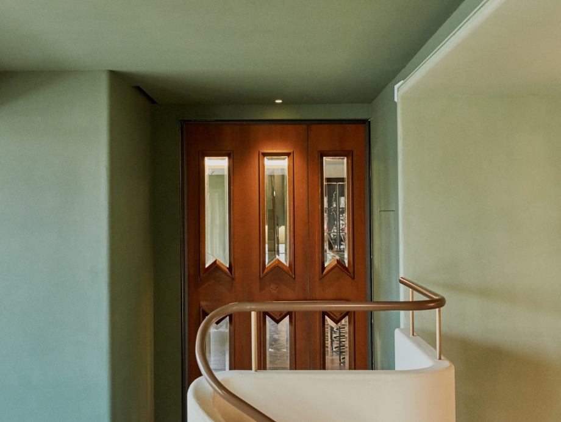
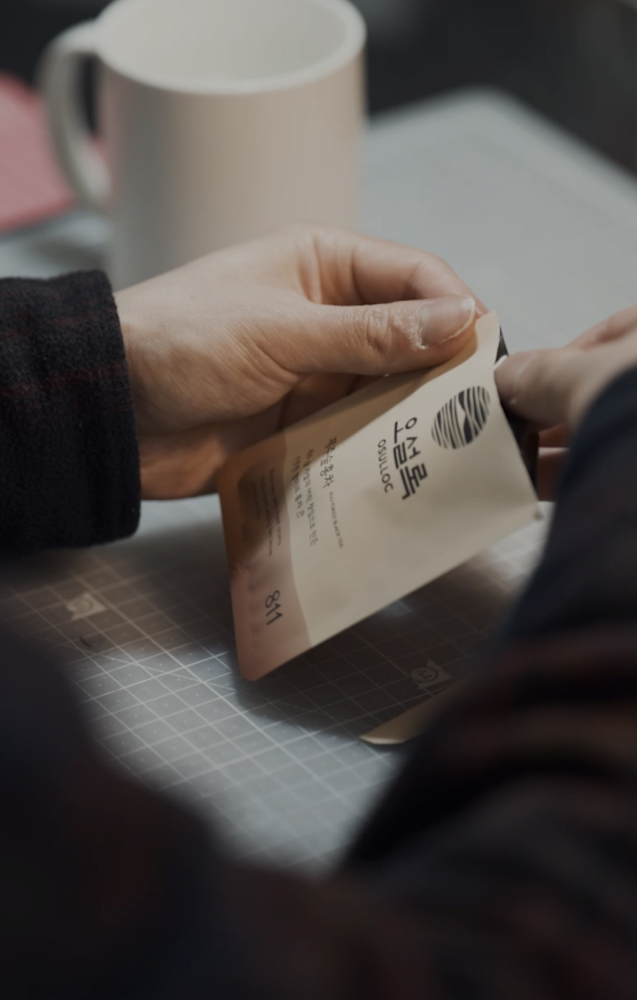

오설록의 스토리
제주는 화산지역이라는 생태계적 특성을 가져 차의 특색이 조금씩 달라집니다.
이러한 개성을 지닌 오설록 3대 차밭의 찻잎들이 조화롭게 어우러져 오설록의 명차는 색(色), 향(香), 미(味)가 뛰어납니다.
약 100만 평에 달하는 3개의 오설록 유기농 차밭은 화산섬의
지역적 기후 환경에 따라 각각의 색과 향, 그리고 맛이 특별한 차를 생산하고 있습니다.

생명을 품은 화산섬의 흙
최대 공극률 75%

청정 화산 암반수
1,800mm 빗물의 천연필터

제주의 거친 바람
연평균 초속 4~7m

아열대 기후의 화산섬
연평균 기온 16도씨
오설록의 제주 차밭
- 서광 차밭
- 돌송이 차밭
- 한남 차밭
-
제주특별자치도 서귀포시 안덕면 신화역사로 36
산방산 근처의 서광 차밭은 대기가 한라산을 지나며 많은 구름과 안개를 형성하고,
주요 생산 제품
이는 자연 차광 효과를 내 찻잎의 색을 좋게 만듭니다. 온화한 기후와 자연 차광 효과는
고급 품질의 차를 만들 때 더없이 좋은 생육 조건이 됩니다. -
제주특별자치도 서귀포시 중산간서로356번길 152-41
돌송이 차밭 지역은 예로부터 화산재가 굳어서 돌멩이같이 잘게 부서진 화산송이가
주요 생산 제품
많아 ‘돌송이’라고 불리어 왔습니다. 이곳은 산과 바다를 동시에 접하고 있어
매년 4월 한라산의 잔설을 품은 산바람과 바다의 수분을 머금은 바닷바람이
밤낮으로 불어와 돌송이 차밭에서 채엽한 차는 향이 매우 좋습니다. -
제주특별자치도 서귀포시 남원읍 서성로652번길 166
과거 ‘해들이밭’이라 하여 마을에서 가장 먼저 해가 드는 곳이라 불렸던 한남 차밭은
주요 생산 제품
온화한 기후에서 성장해 차나무가 어리고 아미노산 함량이 높아 뛰어난 맛을 선사합니다.

자연을 숨쉬게 하는 차밭
제주 오설록의 유기농 차밭은 연간 11,176톤의 이산화 탄소를 흡수합니다.

제주의 자연이 선물한 발효
제주의 봄볕 아래 약발효한 섬세한 꽃향미, 따뜻한 제주 바람으로 발효한

Since 1979
차밭을 개간한 집념을 근간으로 차를 재배하고, 가공 발효하여 세계적으로 권위있는 명차 대회에서
꾸준히 수상을 이어가며 증명된 오설록의 차는 이제 전 세계의 사람들과 만나고 있습니다.


다다일상,
차와 함께하는 삶
차를 마시는 것은 일상의 쉼을 가지며, 나를 이끌어내고 세상을 따뜻하게 바라보는 것에 관한 일입니다.
당신이 언제 어디에 있든 차와 함께 삶의 아름다운 여백을 만들어 나가길 바랍니다.
- 다다일상이 뭔가요?
- 다다일상은 다채롭고 다양한 일상을 위한 오설록 만의 특별한 차 구독 서비스입니다. 매일 똑같은 하루가 지겹다면 티 한잔으로 당신의 일상에 색깔을 불어넣으세요. 다채로운 차 향기로 더욱 풍요로워지는 티 라이프를 만나보세요.
- 다다일상 베네핏이란?
- 다다일상 구독자에게만 제공해드리는 특별한 혜택을 경험해보세요. 다다일상과 함께 더욱 쉼고 편하게 즐거운 티 라이프를 누릴 수 있어요.
- 다다일상 구성은 어떻게 되나요?
-
다다일상은 매월 오설록 티와 티푸드를 합쳐 정상가 기준 3만원 이상으로 구성됩니다.
티웨어는 금액 외로 추가로 전달해드리는 '스페셜 기프트'입니다. 스페셜 기프트는 상황에 따라 변경될 수 있고, 구독 금액에는 영향을 주지 않습니다. - 결제일, 배송지 변경은 어떻게 하나요?
- [마이페이지 > 주문/예약관리 > 다다일상관리 > 다다일상 구독 상세페이지]에서 기존 결제일 기준 2일 전까지 자유롭게 변경 가능합니다.
- 결제일, 배송지 변경은 어떻게 하나요?
- [마이페이지 > 주문/예약관리 > 다다일상관리 > 다다일상 구독 상세페이지]에서 기존 결제일 기준 2일 전까지 자유롭게 변경 가능합니다.
그럼,
오늘 하루는 차 한잔 어떠세요?
-
-
-
- 차 한 잔은 차분하게 하루를 정리하고 내일로 한 걸음 더 나아가게 만드는 기분이 들어요. 하루를 마무리하는 온점 같은 시간이라고 할까.
- 가구 브랜드 대표 양윤선
-
-
 -

-
-
-
-

- 운동을 매일 하는 것도 중요하지만 가장 신경 쓰는 부분은 수분 보충이에요. 운동 전에 물을 마시고 운동을 마치면 따뜻한 차를 마셔요.
- 러닝 트레이너 임소영
-

- 후각이 예민하다 보니 차를 마실 때도 향을 가장 신경 써요. 좋은 향을 내는 차가 심신에 안정을 줘서 더 즐기게 됐어요.
- 채식 요리 연구가 신주하
-
 - 작업에 집중하기 시작하면 쉴 틈이 없는 제게, 차 한잔의 여유는 정말 소중하거든요.
- 테이핑 아티스트 박건우
-

- 차가운 공기 때문인지 진한 자연의 냄새와 차 향이 함께 느껴지는데 집에서 마실 때와는 또 다르더라고요.
- 오지 캠퍼 강서구
-
-